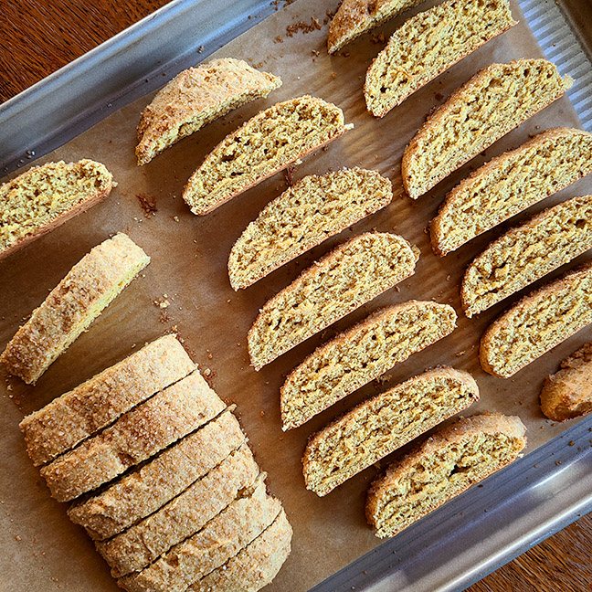

Part Four
- Use a sharp chef's knife or serrated knife to cut the log crosswise into 1/2" to 3/4" slices.
- Turn each biscotti onto it's side.
- Return the biscotti to the oven and bake for 40 minutes, or until they're starting to turn golden brown around the edges.
(They'll still feel quite soft in the middle but will crisp up as they cool in the oven.)
- Turn off the oven, crack the door open a couple of inches, and let the biscotti cool right in the oven.
- Biscotti will keep in an airtight container, at room temperature for several days.
- Enjoy!

Back | Start Over